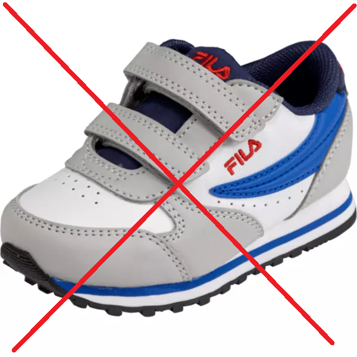
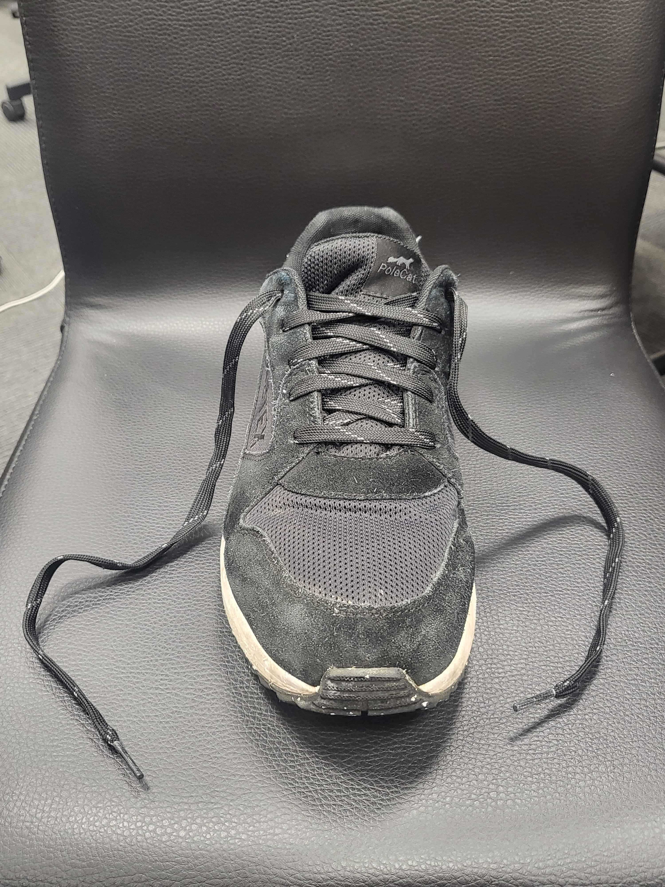
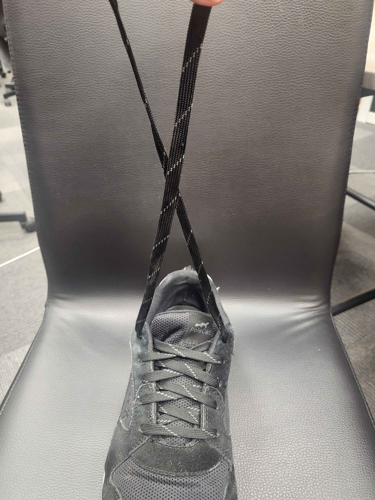
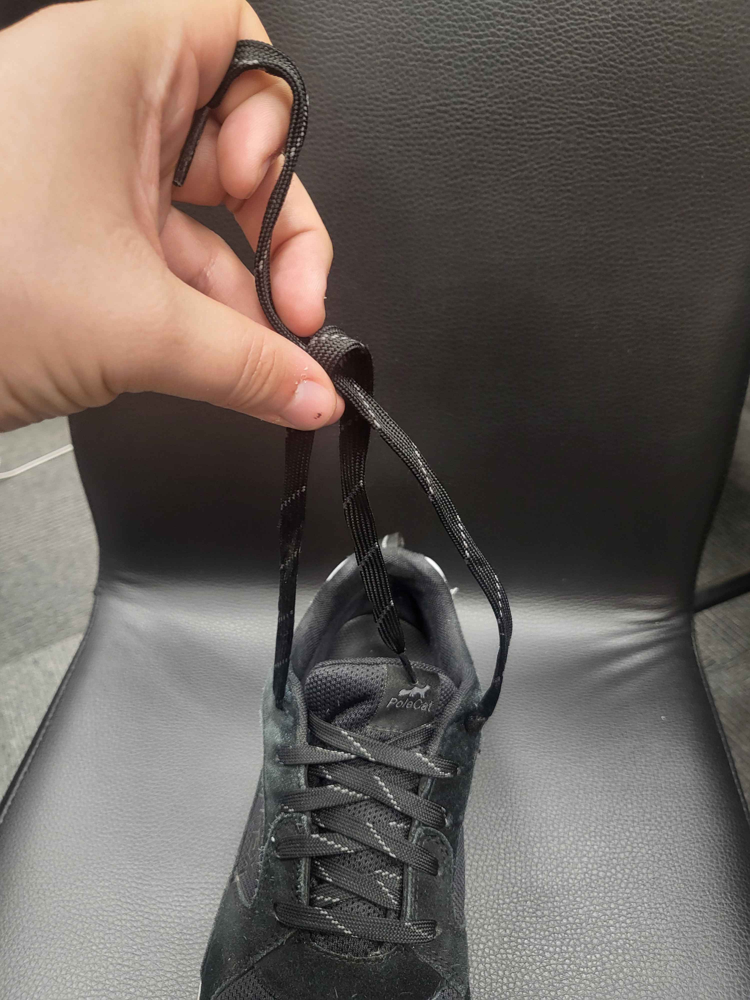
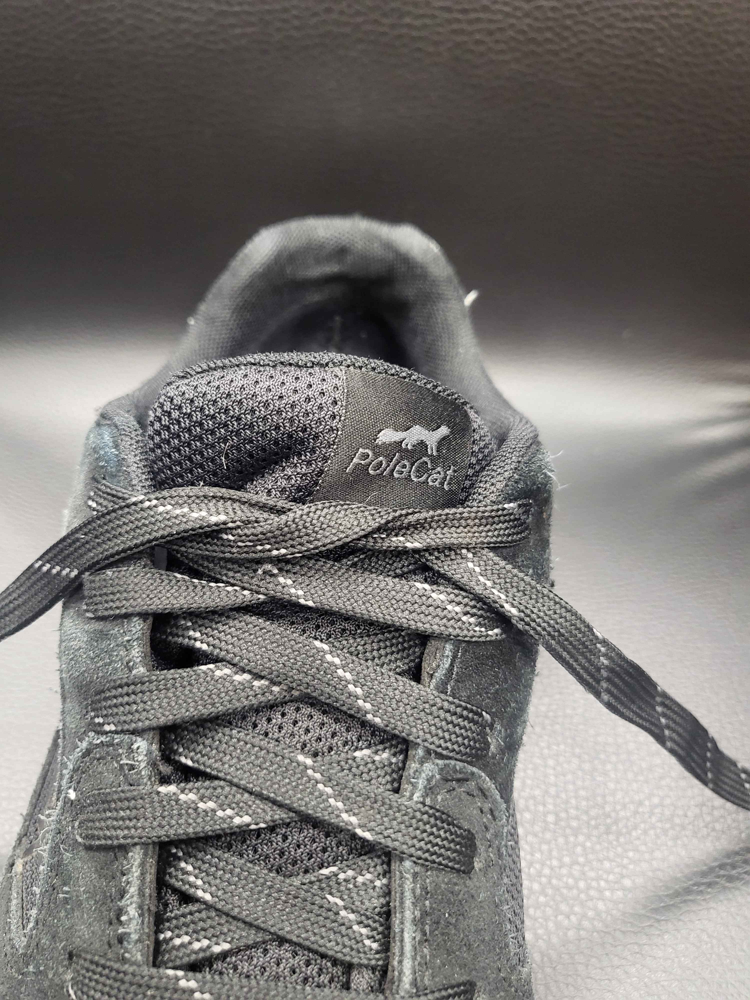
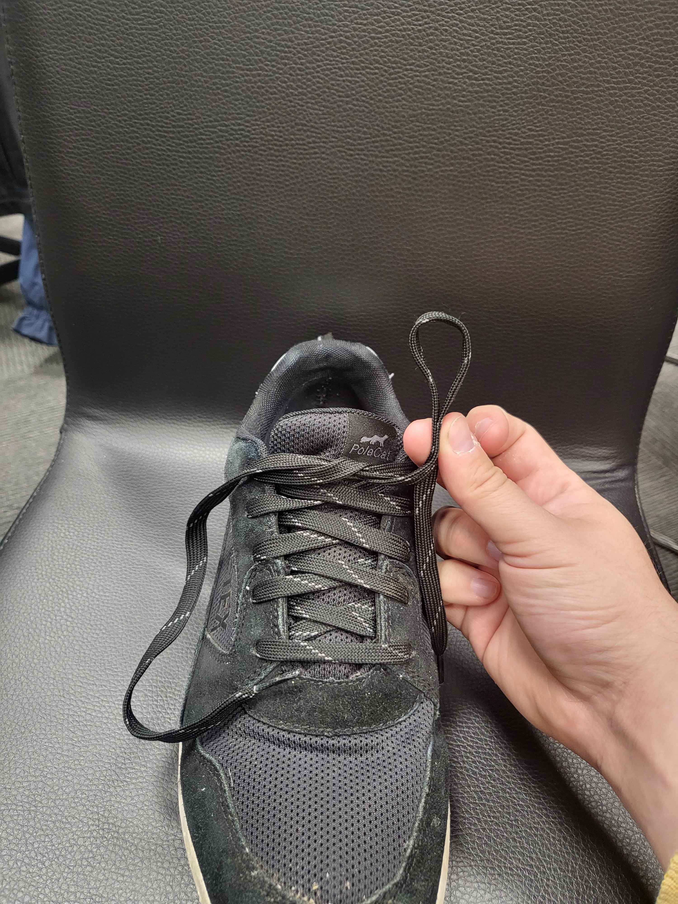
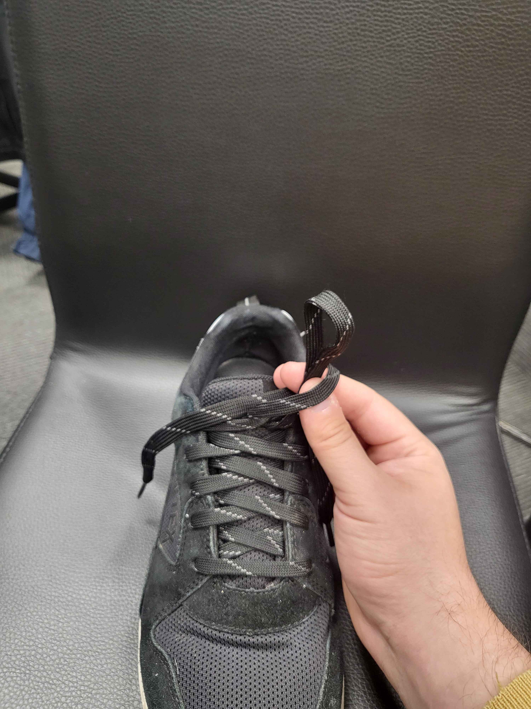
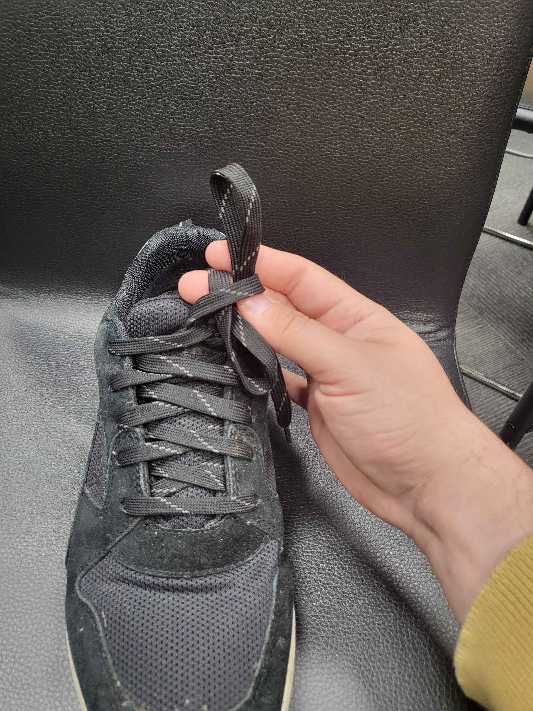
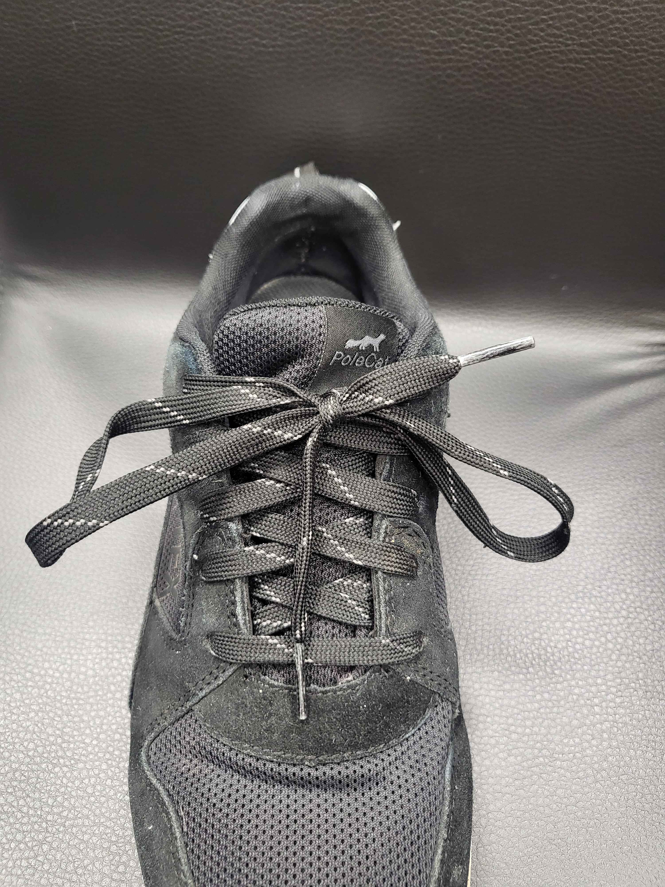

Steg 1
Finn frem en sko med uknytte skolisser. Det er viktig at man ikke velger sko med borrelås
 
Steg 2
Ta de uknytte skolissene, kryss dem, og tre en ende under kryssningspunktet. Deretter dra i endene for å stramme knuten.
  
Steg 3
Lag en løkke med den ene skolissen, snurr den andre delen av skolissen rundt basen på løkken.
 
Steg 4
Lag en ny løkke i andre enden og tre den igjennom snurren rundt løkke 1. Da så godt i basen på løkkene for å stramme knuten og vipps! du er ferdig.
 